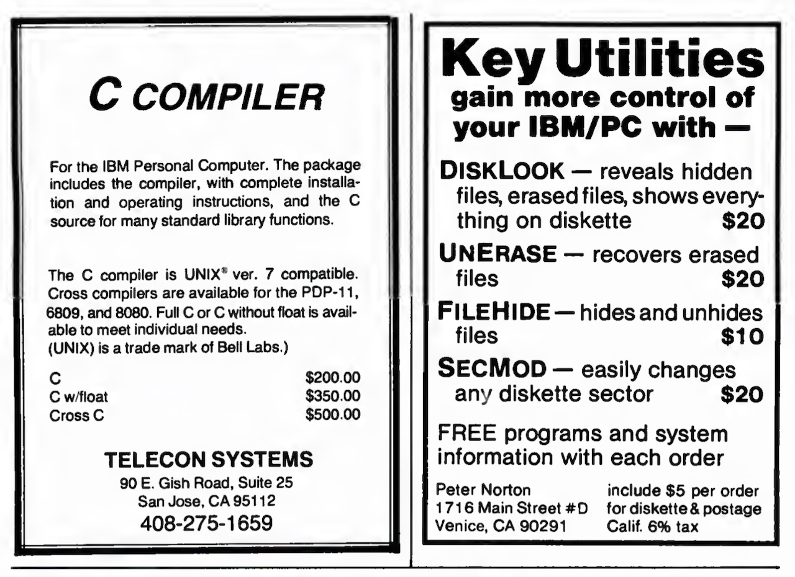
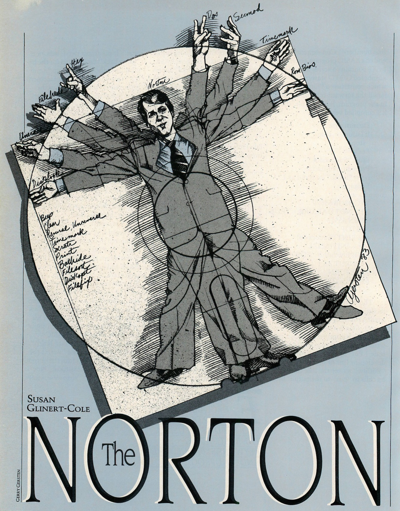

PCjs Machines
Home of the original IBM PC emulator for browsers.
PCjs Blog
Unerasing The Norton Utilities
Appearing in 1982, The Norton Utilities was an interesting set of DOS tools that solved some vexing problems, most notably an “UNERASE” utility that could recover deleted files. Those tools launched Peter Norton on a journey from software developer to book author, magazine columnist, and entrepreneur, culminating in the sale of Peter Norton Computing, Inc. to Symantec Corporation in 1990 for $70M.
Unfortunately, 36 years later, finding copies of Peter Norton’s original PC utilities has become a nearly impossible task–as if they’ve been “deleted” from history. If only we had some sort of “UNERASE” tool that could dive back in time and locate lost software. There are almost certainly copies of those old tools resting peacefully on diskettes somewhere, in closets or attics or basements, which makes their disappearance even more exasperating.
We know that Norton originally sold these four utilities:
- DISKLOOK — reveals hidden files, erased files, shows everything on diskette ($20)
- UNERASE — recovers erased files ($20)
- FILEHIDE — hides and unhides files ($10)
- SECMOD — easily changes any diskette sector ($20)
along with “FREE programs and system information with each order”, according to this early ad in the June/July 1982 issue of PC Magazine:

There are even earlier ads. For example, in the April/May 1982 issue of PC Magazine, there was this entry in the “PC Directory” section:
TIMEMARK
Practical, inexpensive software: TimeMark,
a time, date and elapsed time display routine
($10 on diskette); PasFor, a straightforward,
easily customized Pascal formatter ($15);
DiskLook. a multi-function diskette displayer
($15).
PETER NORTON 1716 Main Street
Venice, CA 90291 (213) 399-3948
But it was clear that DISKLOOK was the emerging star, not just because it pulled the curtain back on your disk’s data, but because it also revealed – most notably to Peter Norton himself – the existence of deleted files and the possibility of recovering them.
In fact, in the “PC Directory” section of the June/July 1982 issue of PC Magazine, Norton had already shifted gears toward file recovery:
UNERASE
Recovers erased files, even if partly over-written.
Never lose a fie again! ($20 plus $5 postage and diskette).
Peter Norton, 1716 Main St. #D
Venice, CA 90291
Apparently there wasn’t much demand for PASFOR.
According to Wikipedia, “Version 1.0” of Norton Utilities consisted of 14 utilities on three disks for a total of $80:
- UNERASE - recovers erased files
- FILEFIX - repairs damaged files
- DISKLOOK - complete floppy disk displays and maps
- SECMOD - easy changes to floppy disks
- FILEHIDE - interactive hidden file control
- BATHIDE - automatic hidden file control
- TIMEMARK - displays date, time, elapsed time
- SCRATR - sets DOS to work in any colors
- REVERSE - work in black on white
- CLEAR - clears the screen for clarity
- FILESORT - sorts floppy disk files by date or name
- DISKOPT - speeds floppy disk access
- BEEP - causes the PC speaker to beep
- PRINT - prints files
However, Wikipedia authors have muddied the waters a bit, because Peter Norton sold his original four programs “ala carte”, so the contents of a given disk would vary according to the order. It’s likely that all four would have fit on a single diskette (certainly less than three), and if you bought all four programs, the cost would have been only $70 (plus $5 for postage, diskette, and California sales tax), not $80.
Granted, those early ads did say that other “FREE programs” were included with each order, so the above list could be more or less accurate, but without access to any of those early diskettes, it’s hard to say.
It is also true that as of Version 1.15, the Norton Utilities had become a 14-utility set that spanned three single-sided (160Kb) diskettes, to ensure that even the earliest IBM PC owners, using only PC DOS 1.00, could read them. More details about that version can be found in the PC Tech Journal July/August 1983 article below.
NOTE: In that same PC Tech Journal issue, Peter Norton is also a guest columnist; see the article titled “Tinkering With DOS 2.00”. The article doesn’t actually talk much about DOS 2.00, but instead provides some examples of how you can patch utilities in PC DOS 2.00 to customize their behavior. What’s noteworthy to me about the article is that he demonstrates the patching process without providing any insight into how he found the patch addresses, let alone how to debug software in general. This is one of the problems with a commercial developer writing articles for a publication – if the developer sees it as an opportunity to gain exposure for himself and his products, that may create some disincentive for them to delve too deeply into areas where they feel they have unique expertise or a competitive edge. It also underscores the value of having a tight association between your name and your products. But I digress.
The Norton Utilities Version 3.0, first released in late 1984 and the oldest version we have been able to locate so far, expanded the list of utilities to 16:
- BEEP
- DIRSORT
- DISKTEST
- FILEATTR
- FILEFIND
- FILESIZE
- LINEPRNT
- LISTDIR
- NORTON
- SCRATR
- SYSINFO
- TEXTSRCH
- TIMEMARK
- VOLABEL
- WIPEDISK
- WIPEFILE
The UNERASE feature was still there, but it was now part of the NORTON program (aka NU if you ran SHORT.BAT
to shorten all the filenames), effectively stamping his signature feature with his own name. The importance of brand
recognition was not lost on Peter Norton, as evidenced not only by the “selfie” on his diskette sleeves
but also most of his print ads, book covers, etc.
Some all-new utilities included VOLABEL (since volume labels hadn’t existed prior to DOS 2.0), WIPEDISK and WIPEFILE,
while others were renamed (eg, PRINT became LPRINT and eventually LINEPRNT).
I would have liked to have wrapped up this post with some screenshots and examples of how one would have actually used the original Norton Utilities to undelete files, browse disk sectors, etc, but as I’ve already lamented, the original utilities are nowhere to be found.
You can, however, play with newer versions of The Norton Utilities, including:
- Version 3.00 (1984-1985)
- Version 3.10 (1985-1986)
- Version 4.00 Standard Edition (1987)
- Version 4.00 Advanced Edition (1987)
The 1984 release of Version 3.00, as well as the Version 4.00 Advanced Edition, are recent PCjs acquisitions, but I’m still on the lookout for older versions, so please contact me if you have anything that predates version 3.
In the meantime, we’ll end this blog post with some old magazine articles.
Selected Magazine Articles on The Norton Utilities
July 1983
In PC Tech Journal’s premiere July-August 1983 issue, the article “THE NORTON UTILITIES” appeared. It was written by Susan Glinert-Cole and has been reproduced below.

The Norton Utilities
THE 14 ADJUNCT PROGRAMS IN THIS PACKAGE FOR THE IBM PC DOS HAVE EXCELLENT HUMAN ENGINEERING AND NO UNEXPECTED OR UNPLEASANT SURPRISES.
The Norton Utilities are a set of 14 programs designed to be a powerful adjunct to the IBM PC-DOS. They range in complexity from simple to intricate and sophisticated functions of use to the advanced programmer. Some utilities permit minute exploration and manipulation of disk files; other programs provide DOS with convenient functions usually only accessible from IBM Basic. Minimum system configuration is one disk drive and 64K of memory, although a few of the utilities, which were not specified in the documentation, will run in a 48K system. The documentation itself is exceptionally well organized, informative, and clearly written. It follows the DOS graphic format and is designed to be inserted into the DOS manual. Peter Norton has that rare talent for explaining complex ideas in a cogent and comprehensible style, without being overly wordy or technical. The manual is educational in itself, and in conjunction with the utilities, provides an excellent educational tool for some of the advanced concepts of disk organization. Version 1.15 is compatible with JFORMAT, for those who have this utility available.
The set is provided on three single sided diskettes. This is particularly inconvenient in view of the fact that the DOS diskette must remain resident in one disk drive, since the utilities exit to the system. With care, all the programs can be packed onto two single or one double sided diskette, which considerably reduces the time spent swapping disks back and forth. Since some of the programs will be used only infrequently, the more frequently used functions may be copied to a disk with the DOS system on it. All of these programs are provided as external DOS commands and must therefore be accessible from a diskette when called from the operating system.
The major programs of the set, Disklook, Unerase, FileHide, and SecMod, as well as some of the minor ones, are all driven from very attractive and self-explanatory menus. All of these programs make effective use of the cursor and function keys and the menus are consistent from program to program. Function key 2 always causes information to be read from a diskette, Fl always returns to the main menu or, if pressed again, replaces the screen with the former display. F10 exits the program back to DOS. A few of the smaller programs, such as Beep and Clear, do not require menus and are simply invoked by typing the command after the DOS prompt.
The Simple Utilities
These seven programs are most conveniently utilized from batch files.
BEEP - This command emits a loud piercing sound designed to call attention to a problem during batch processing.
CLEAR or CLS - This command clears and resets the screen. It is equivalent to the CLS command in Basic.
REVERSE - This changes the display to the reverse video mode. The screen remains in this format until reset by a CLS command or the SCATR command (see below). REVERSE would be better if it reversed the screen from one state to the other, as the word implies.
TIMEMARK - This utility displays the current date and time and will also calculate and display elapsed time (up to a 24 hour limit), using the Start and Stop operations. The information may be shown on the right or left of the screen, and it is possible to suppress the display altogether if desired.
SCRATR - This command sets the screen to any desired display mode. Unlike the other programs in this set, this one is not very convenient to use. The screen attribute is set by passing either eight binary digits or two hex digits, thus requiring the user to calculate, using the IBM Technical Manual, the appropriate parameter. Hopefully an updated version would allow the input to follow the BASIC conventions for controlling the display.
PRINT - This utility is a simple formatting program, which transfers an ASCII file to a printer. A no-numbering option suppresses line numbers. PRINT inserts page breaks and prints the file name, current date and time at the top of each page.
BATHIDE - This function is designed as a batch processing utility which hides or unhides files. This is convenient when a program requires access to files which should normally be kept hidden, either to prevent accidental erasure or access by the wrong people.
The Intermediate Utilities
FILESORT - This very handy utility sorts file directories in one of four ways: alphabetically by file name, alphabetically by file name extension, by date and time of file creation, or by the size of the file. The program accepts one letter abbreviations for sort order. The complete file name is always used as the secondary key, if required. Unfortunately, the copy in the set received for review did not work at all. The reviewer attempted numerous variations on the input parameters, with no success, and time was too short to obtain a working version.
DISKOPT - Designed to be used in conjunction with the COPY utility in DOS, this utility rearranges the directory entries on a disk into an order which has been designed to optimize access time. When this command is invoked, the directory entries are reordered; copying the diskette places the files in the same order as the reorganized directory.
FILEFIX - It is the fervent hope of this reviewer that this program will never be needed. When called, it will check a file for damaged areas and attempt to recover those regions of the diskette which are undamaged. FILEFIX examines one sector of data at a time, removing any sectors found to be unreadable from the file’s space allocation table. This allows the undamaged sections of the file to be copied.
The Advanced Utilities
The last four programs in this package presuppose some sophistication on the part of the user, although, with the exception of SECMOD, provide relatively straightforward functions. Since all of these programs deal in an intimate way with the organization of data files, we digress briefly to exam ine the manner in which information is stored on a diskette.
Unlike a phonograph record, which stores its information in one continuous spiral, data is recorded on a diskette in concentric circles called tracks. The IBM PC format specifies 40 of these tracks per disk, but other operating systems may support different numbers of tracks. Each track is divided, like a pie, into sectors; a diskette may be either hard or soft sectored. On hard sectored diskettes the number of sectors per track is strictly predetermined and may not be altered by software. If you look at a hard sectored disk, you will see ten or sixteen holes around the hub. Each of these holes indicates the location of one sector. The IBM PC uses soft sectored diskettes; only one index hole can be found at the hub, which delimits the beginning (or end) of the track. The sector size itself is flexible. Theoretically, a track can have only one sector, although this is not usually practical. The present format supported by DOS is eight sectors per track, each of which will hold 512 bytes of data. The ROM BIOS is capable of supporting other sector formats, which allows the PC to run other operating systems which do not use the eight sector format.
When information is read from or written to disk, the operating system must have some way of keeping track of where the data has been stored and what areas of the disk are free to be written to. In fact, there are three primary ways used to map a diskette: track and sector number, absolute sector number and cluster number.
Track and sector number is used primarily by the ROM BIOS routines which do disk I/O. Tracks are numbered 0 to 39, beginning with the outermost track. If the disk is double sided, a further distinction is made between side 0 and side 1. Sectors in a track are numbered from 1 to 8. On a single sided disk, track 0, sector 8 is followed by track 1 sector 1. Double sided diskettes use the same track on the second side before moving to the next one, which doubles the amount of data accessible without moving the head and thus permits faster disk access. Therefore, on double sided disks, track 0 sector 8 side 0 is followed by track 0, sector 1, side 1.
Sectors may also be numbered according to an absolute sector number scheme. In this case, sectors are numbered continuously, on a single sided disk, from 0 to 319. Track 0, sector 1 is absolute sector number 0; track 1, sector 1 is absolute sector number 8 and so on, up to track 39, sector 8, which is absolute sector 319. If the disk is double sided, the absolute sector numbering continues on the other side with 320 (this would be track 0, sector 1, side 1) up to absolute sector 639. The DEBUG program in DOS uses absolute sector numbers when referring the disk information.
DOS has yet a third way of referring to disk organization, called cluster number. A cluster is merely a section of disk space which is al lotted to a file. Single sided diskettes have one sector per cluster, and double sided disks have two. DOS uses a File Allocation Table (often referred to rather depressingly as the FAT) to keep track of which clusters are allocated to which files. Since files are not necessarily written to contiguous areas of the disk, the FAT not only contains the allocation information, but each entry in the table has a pointer to the next cluster of the file.
Finally, there is the organizational section of PC DOS which is visible to the user: the diskette directory. The directory structure is initially built with the FORMAT program. For single sided disks, the directory may have 64 entries; dual sided diskettes may contain 112 entries. Each entry of the directory is 32 bytes long and contains all of the information pertaining to a file except for its space allocation, which is contained in the FAT. The data coded into these 32 bytes include the file name, extension, starting cluster, file size, time and date of creation. One byte is reserved to describe the file attribute. Hex ‘02’ means the file is hidden, hex ‘04’ designates a system file, and normal files have an attribute byte of hex ‘00’. More detailed information on the directory may be found in the DOS manual. At this point, we have enough information to look carefully at the rest of the Norton Utilities.
FILEHIDE - This utility controls the attribute byte associated with a file. It can hide a normal file, unhide a hidden one and can reset system files to normal and vice versa. Like all the other programs in the advanced utilities, FILEHIDE is entirely menu driven with the function and cursor keys, and a few minutes spent with the menu is all that is needed to use the program. Pressing F2 reads the directory in formation from a diskette and displays all files with their attributes. The directory is displayed with one file highlighted; choosing another file is just a matter of walking the highlight up and down with the cursor keys. F3 through F6 will switch the attribute byte; the change becomes permanent when written to disk with F9. There was a typo in the review copy: two of the menu entries (F4 and F6) are identical. F6 should actually read ‘Reset System’, not ‘Reset Hidden’, as F4 is really the ‘Reset Hidden’ function key. The program works in the same way as BATHIDE, except that the latter is specifically designed to be placed in a batch file. FILEHIDE would be useful for accessing software which has been received as hidden files and for giving a nominal amount of protection to your own files.
UNERASE - This is another utility that one prays will never have to be invoked, but, in the event that accidental erasure be comes a reality, will have a price above rubies. It is best used in conjunction with DISKLOOK (see below), which will give the track and sector information needed to perform a rational recovery of the erased file.
When a file is erased, only two things really happen to it: the first letter of the file name is replaced by hex ‘E5’, which means that the directory entry is now available for use by another entry, and the allocated space in the FAT is considered free to be written on by other data. Therefore, if you have just accidentally erased a file, and have not done any other writing to the disk, it is no problem to recover the file in its entirety with UNERASE. In the event that you have written something else on the disk, it will probably be possible to recover at least part of the data.
It is strongly suggested that a few practice runs precede any attempt to reconstruct an accidentally erased file of priceless data. The documentation for this particular program was not quite as clear as it ought to be and, while using the utility is not complicated, it re quires strict attention and a good understanding of its function. In a situation where one is panicking at the idea of having just lost the entire year’s profit and loss statement, it is advisable to procede [sic] with extreme caution.
Recovering a file is done in three steps: choosing the desired file, selecting the file’s data sectors, and inserting them in a reconstructed file to be saved to disk. Choosing the file is merely a matter of pressing F2, which will display all erased files on the disk. The first letter of these file names are all question marks, so the file is selected by the second letter. Once a file has been designated for recovery, UNERASE will display all of the data it knows about the file, like its size and condition of the first data sector. You then have the option of selecting sectors for recovery manually, or letting UNERASE do it for you. The data in each sector may be displayed in either hex or ASCII. This allows you to make sure that the sector you are about to save actually belongs to the file in question. At any time during the recovery process, you may review your progress and make sure that everything is proceeding as planned.
The reviewer tried out the program on an erased, outdated version of an old program, and it worked perfectly after the process became familiar. Again, this utility is one that will be priceless when needed and should have a place in the library of every PC user.
SECMOD - For you advanced programmers with a hexadecimal philosophy, SECMOD may become your favorite utility in this package. It allows the user to walk through any file, sector by sector, and change any of the information contained therein. To begin, you have the option of choosing either a file or a specific track and sector for browsing; the cursor keys are used to move from nibble to nibble or from sector to sector. The left side of the display is in hex, and the right side is in ASCII; the cursor may be changed easily from one to the other with the tab key. When the cursor is at the place to be changed, the new data is simply typed. All information so changed is highlighted, and no change is permanent until you write to the disk with F9. Once the change is made permanent, it is no longer highlighted. This is unfortunate, be cause if the change did not produce a desired result, it can be difficult to locate exactly where the last alteration began and ended. A hard copy of the screen can be made with the PrtSc key and the program is cleverly designed to strip unprintable characters off of this output. Having a hard copy is advisable, as it is easier to keep track of your revisions. The reviewer used SECMOD to change the DOS startup messages in the COMMAND.COM file to something a bit more personal but this utility has some obvious, less trivial uses, such as customizing packaged software for personal use.
DISKLOOK - This last program is the most unique, imaginative, enjoyable and educational one in the package. Again, entirely menu driven, it provides complete information on every file on the disk, including the name, directory number, size, creation date, attribute, starting cluster, track and sector and whether the file is available or erased. This data is presented as textual material at the top of the screen, but the best part of this program is the disk map which accompanies each file. The conceptual and graphic presentation of the information is absolutely outstanding.
Pressing F2 gets the information from the disk, and then F9 will display all of the diskette information in the form of a complete map of all the space allocation on the disk, including bad tracks, conflicting allocations, usable areas, hidden system files and normal files. The vital statistics of the disk are displayed above the map and provide number of sectors and percentages of total sectors allotted to each type of file (system, hidden, erased, normal). F8 selects a specific file for display. F4 will show the file’s directory information, and F5 and F6 will display its data in ASCII text line format or hex and character format, respectively. If you prefer, you can select a specific track and sector for display with F7 and then use F5 or F6 to browse through the sector. The disk directory can be sorted into ten different formats, five for normal files and five for erased files. This is extremely helpful in locating specific files for display with the other parts of the utility. Aside from providing valuable information about the condition of the disk, this program is fun to use and gives an insight into data organization which is worth the proverbial thousand words.
A considerable amount of thought went into the creation of this utility package. The human engineering is excellent and error recovery was impeccable. With the exception of one program, they all worked perfectly, and there were no unexpected or unpleasant surprises to be found anywhere. A nice addition to this package would be a stick-on label which could be placed on a blank section of the DOS Quick Reference Card. This would be in keeping with the manner in which the package follows the DOS philosophy on all other counts and would be a convenient conceit. The reviewer could but wish that Mr. Norton would try his hand at making the rest of the operating system as comfortable, attractive and easy to use as his Utilities are.
Also in July 1983, PC Magazine’s “Letters to PC” contained a letter from Peter Norton, perhaps more promotional than informational, but interesting nonetheless:
Save That File!
I read with interest Mark Zachmann’s “PC Tutor” column in PC, Volume 1 Number 11,and thought that I might be able to offer some more information on the subjects of erased files and hidden files.
PC-DOS does not provide any easy or regular means either to recover hidden files or to control the file attributes, such as “hidden,” “system,” and “read-only.” However, there are programs available to do all these things. My Norton Utilities package includes tools that make this quite easy, and similar programs are also available from other authors.
Many people do not understand how it could be possible to recover an erased file, but a little analogy can help make it clear. Erasing a file from a disk is similar to taking a file folder out of a filing cabinet, and throwing the pages from the folder into a waste basket. The data from the file hasn’t been destroyed, it simply has been discarded. Eventually the data on the disk will be completely lost, when other data is written onto the disk sectors where the old data was.
An erased disk file can be recovered by a process that is analogous to digging through a waste basket, looking for something you threw away. Provided that the original data is still in the disk’s “waste basket,” it can be recovered. A program like UnErase, which is part of the Norton Utilities package, can do the tricky technical task of re-allocating data to an erased file. If the file recovery program is well-written, the process can be very easy.
Anyone who uses an IBM PC would be wise to get a good set of file recovery programs, and not just to get back files that were accidentally erased. Good file recovery programs can help you get back data that was lost due to damage to a diskette, or due to scrambling of a disk’s file storage tables. Using your PC without file recovery programs is like driving a car without insurance, or swinging on a trapeze without a safety net.
Peter Norton
The Norton Utilities
Santa Monica, California
In the same July 1983 issue of PC Magazine, Peter Norton was a guest columnist; his article “The Dark Side Of PC-DOS 2.0” was kind of a nit-picky article that was long on complaints but short on details. For example, he talks about a problem with the COPY command when using it to concatenate ASCII files, but he doesn’t say what the problem was, how to reproduce it, or how to avoid it – all things a typical reader might like to know. Once again, the article may have been written more with an eye toward self-promotion than anything else; for example, when talking about the new DOS volume label feature, he writes:
I solved the label problem by writing a label program that can add, change, or delete volume labels in any format of disk. (I added the label command to my utilities set.)
September 1983
In the September 1983 issue, PC Magazine unveiled a new column, “The Norton Chronicles”, described as:
A monthly column by Peter Norton, perhaps the best-known authority on the internal architecture of the IBM PC and PC-DOS.
Norton was one of the first followers of the PC when it was introduced 2 years ago. Within 6 months, copies of his Norton Utilities began to appear in computer stores. The Utilities have continued, now expanded and updated to deal with DOS 2.0. Users can un-erase files mistakenly killed; and perform other “inside” manipulations.
Norton began his involvement with computers more than a decade ago, starting with systems design, commercial applications and programming on mainframes for companies such as Boeing and the Jet Propulsion Laboratories. Born in Seattle, he now lives in Venice, California. His book, “Inside the IBM PC,” has just been published by the Robert J. Brady Co. (See “Peter Norton Tells All” in this issue.)
“PCs are the real future of computing and will chart the path for computer companies large and small,” Norton said. “With IBM basing so much of its future on personal computers, we all know that this is the most exciting and promising area to work in.”
We couldn’t agree more. Welcome Peter.
The inaugural article, “PC Languages: The Living And The Dead”, recognized the growing importance of the C programming language, but it was also sort of a homage to Pascal. At one point he writes:
At this point I am usually asked, “So you do all your programming in Pascal?” and I answer, “No, I now do all my programming in C; I don’t use Pascal any more.”
but then later he says:
Pascal has an unusually clean and clear form, and its heavy use of meaningful English words makes it easier to read and understand. In addition, Pascal includes features, such as enumerated data types and strong typing (which are ideas too complex to explain here), that greatly assist the writing of reliable programs. It is for these reasons that I consider Pascal to be, in general, the best programming language to use.
February 1986
PC Magazine’s February 11, 1986 article “Norton Utilities: Still the Best?” by Winn L. Rosch had this to say about Norton Utilities 3.10:
For years. The Norton Utilities have been the standard choice for adding powers to DOS that its writers forgot. The latest update, Version 3.10, adds even more abilities.
Now. less expensive products–PC Tools from Central Point and the File Recovery System from Brown Bag Software–offer similar enhancements and threaten Norton’s dominance.
The Norton Utilities are known primarily for their file recovery abilities.
In Version 3.10, the intricate NU (main) program has been tamed somewhat by revising its default selections. Repeatedly pressing the Enter key is now enough to recover a file without a glance at the instructions. The 3.10 package also includes a pair of worthy new features QU, or Quick Unerase, which can recover one file or a whole disk of them using a quick-and-easy query system, and a program to recover inadvertently removed subdirectories.
Also included in The Norton Utilities are short programs that make everyday disk use more convenient, including a file- and disk-erase utility that now will overwrite specifications.
And the author summarized:
Improved ease of use in Version 3.10, especially file recovery, Norton remains the class act in a now crowded field of DOS utilities.
August 1987
PC Magazine’s August 1987 article “Back From The Brink: File Recovery Software” by Winn L. Rosch had this to say about Norton Utilities 4.0:
The Norton Utilities, Version 4.0 and The Norton Utilities Advanced Edition
The Norton Utilities is the program that started it all: the first successful enhancements for DOS. The star attraction of the Peter Norton Computing package was (and remains) its miracle-working unerase utility. Since its introduction over 5 years ago, The Norton Utilities has gone through several revisions–Version 4.0 is now current–and has attracted a host of imitators along the way.
With each new version, The Norton Utilities has improved, increasing in power, features, and ease of use. However, this latest release marks a change of direction, if not a bifurcation. Where there once was one package, now there are two: the ordinary Norton Utilities that sells for $100 and the Advanced Edition for $150. The Advanced Edition includes all of the features of Version 4.0 plus additional ones.
The two packages remain the same up to a point. Both contain the identical set of utility programs which, for the first time, are linked by a menu-driven front-end, called the Norton Integrator. All of the Norton features are selectable using a moving bar. Better yet, as you select each program, the right side of the screen lists its various options so you hardly need to glance at the documentation.
The program common to both versions of The Norton Utilities has an updated interface and a few mechanical aspects, but it remains functionally the same. Where function keys once reigned, control now rests in hot keys and moving bars. Despite this change, the default selections still lead you through manual file recovery.
The common program also includes a byte-level editor, but the two Norton packages include different abilities. In the ordinary Norton Utilities, editing is limited to disk data areas. The advanced version expands the prey to include the whole disk from boot to last sector, including directories, the FAT, and disk partition table.
All the other features of The Norton Utilities package are still available, from BEEP (which can now read files to play entire songs) to WipeDisk and WipeFile. Other subtle (and not-so-subtle) revisions and additions have also been made.
The carry-over programs include Directory Sort, which writes its changes to disk; Disk Test, which now will move files that are in danger and mark or unmark bad sectors; File Attributes, which will mark or unmark files as hidden, system, or read-only; File Find, which locates files by name anywhere on a disk; File Size, which lists the actual disk space used by the data in a file as well as the disk space it requires; List Directories; Line Print; Screen Attributes, which changes screen colors; System Information, which now includes a microprocessor speed test, a disk speed test, and a combined test; Time Mark; Text Search; and UnRemove Directory, which is pretty much self-explanatory.
Added to the previous endowment is ASK. which grabs typed text to help you make your batch files interactive, and Norton’s Change Directory (NCD), that takes you to any subdirectory anywhere on a disk almost instantly; you merely type part of its name. For instance. NCD GARB will take you to the subdirectory named GARBAGE six levels down from anywhere on the disk. File Info allows you to append a 65-character description to each directory entry to help you remember what’s what and where.
In addition to the functions of The Norton Utilities, Version 4.0, the Advanced package includes Speed Disk, which packs disk clusters and makes files contiguous, and an unformat feature. As with other unformat utilities, this one requires you to run a special program when you boot up and also during your daily routine. The unformat process restores the system to the place it was when last saved.
The documentation, which includes two manuals, is the best of any package evaluated here. One describes the utilities and their functions. The other tells you more than you might ever need to know about how DOS works. All in all, The Norton Utilities is still the most feature-packed, most polished DOS enhancement available.
And The Norton Utilities, Version 4.0 shared PC Magazine’s “Editor’s Choice” award with PC Tools and SafetyNet*:
The venerable Norton Utilities still earns a tip of our hat, too. The package provides the most functions–all of them so useful you’ll wonder how you did without them–and it gives you the best documentation and the slickest presentation. Rather than buying the Advanced Edition at its $50 premium, however, we’d join The Norton Utilities, Version 4.0, with PC Tools (at $39.95) instead. You’ll pay less, get all the added abilities of the Advanced Edition, and have its resident mode as a bonus.
Diskette Photos
Jeff Parsons
Dec 28, 2018